1 / 3
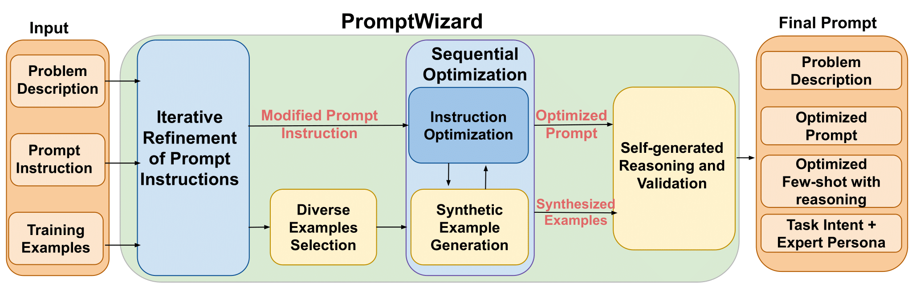
2 / 3

3 / 3
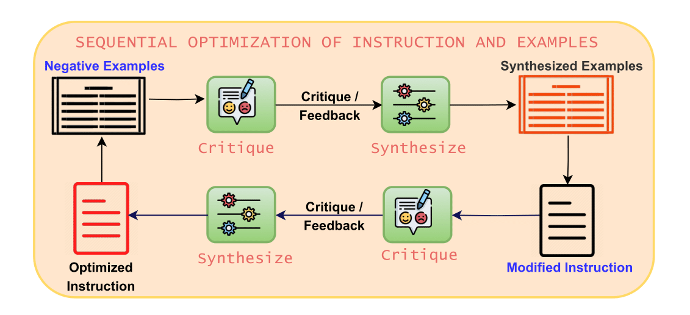
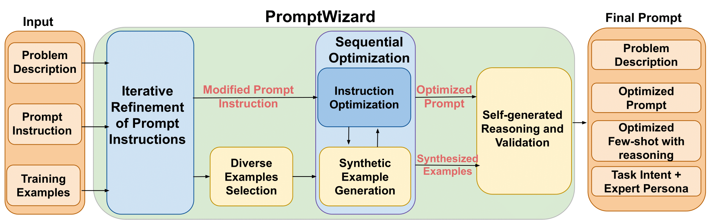
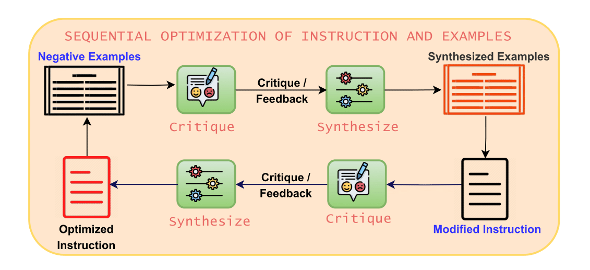
PromptWizard (PW) is a discrete prompt optimization framework that employs a self-evolving mechanism where the LLM generates, critiques, and refines its own prompts and examples, continuously improving through iterative feedback and synthesis. This self-adaptive approach ensures holistic optimization by evolving both the instructions and in-context learning examples for better task performance.
Following are the details of each step :
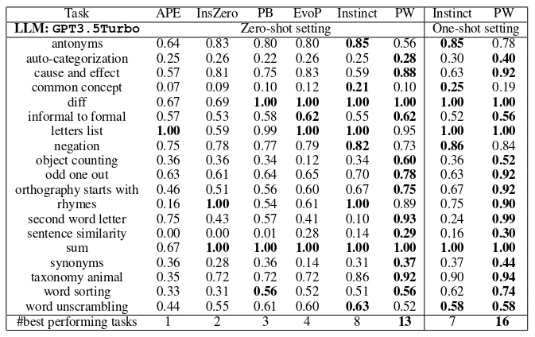
PromptWizard outperforms the baselines, achieving the highest accuracy on 13/19 tasks (68%) with 0-shot and 16/19 (84%) with 1-shot
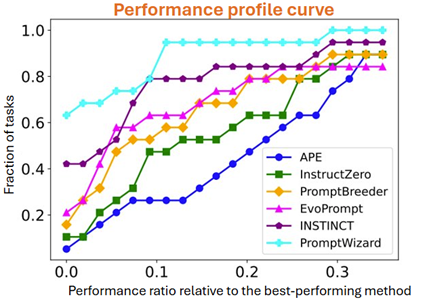
PromptWizard consistently performs near the best possible accuracy across all tasks
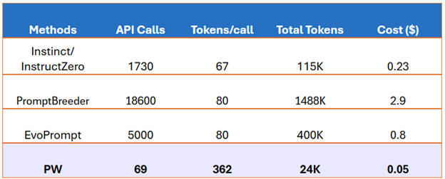
PromptWizard costs just $0.05 per task, 5-60x reduction in overall tokens/cost
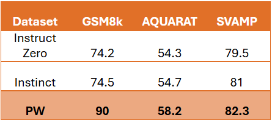
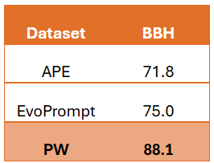
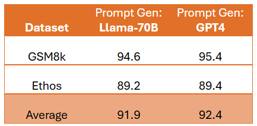
PromptWizard using Llama-70B show a negligible < 1% drop in accuracy
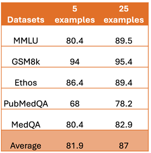
PromptWizard shows strong resilience even with fewer training samples mainly due to synthetic example generation and reasoning chains

Substantial performance improvements across all models when optimized prompts are generated by PromptWizard on GSM8k dataset
| Dataset | Accuracy (high) | |||
| DSPy | PromptAgent | APO | PW | |
| GSM8k | 78.2 | 68.84 | 25.67 | 90 |
| AQUARAT | 55.1 | 56.67 | 20.12 | 58.2 |
| SVAMP | 77 | 78.67 | 75.25 | 82.3 |
| ETHOS | 84.1 | 84.25 | 80.62 | 89.4 |
| Dataset | Calls (low) | |||
| DSPy | PromptAgent | APO | PW | |
| GSM8k | 915 | 2115 | 8490 | 147 |
| AQUARAT | 920 | 2200 | 8500 | 112 |
| SVAMP | 2300 | 2111 | 8000 | 178 |
| ETHOS | 660 | 2217 | 8200 | 80 |
| Dataset | Tokens (low) | |||
| DSPy | PromptAgent | APO | PW | |
| GSM8k | 262 | 500 | 109 | 237 |
| AQUARAT | 326 | 875 | 125 | 200 |
| SVAMP | 189 | 680 | 85 | 127 |
| ETHOS | 175 | 417 | 55 | 190 |
PromptWizard outperforms feedback based methods like APO, PromptAgent and other prompt optimization techniques like DSPy in terms of accuracy and number of API calls for optimization on various datasets. For the case of number of average tokens per call, PromptWizard uses the second least number in most cases and is only behind APO which being a techinque designed for only binary classification tasks generates smaller sized prompts (hence uses fewer tokens) and is not extensible to other tasks.
@misc{agarwal2024promptwizardtaskawarepromptoptimization,
title={PromptWizard: Task-Aware Prompt Optimization Framework},
author={Eshaan Agarwal and Joykirat Singh and Vivek Dani and Raghav Magazine and Tanuja Ganu and Akshay Nambi},
year={2024},
eprint={2405.18369},
archivePrefix={arXiv},
primaryClass={cs.CL},
url={https://arxiv.org/abs/2405.18369},
}